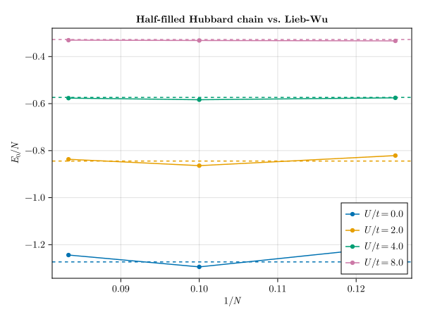

Fermi-Hubbard chain vs. the exact Lieb-Wu solution
The one-dimensional Fermi-Hubbard model describes spin-1/2 fermions hopping on a chain with an on-site interaction between opposite spins:
\[\hat{H} = -t \sum_{i=1}^{N} \sum_{\sigma} \left( \hat{c}_{i,\sigma}^{\dagger} \hat{c}_{i+1,\sigma} + \text{h.c.} \right) + U \sum_{i=1}^{N} \hat{n}_{i,\uparrow} \hat{n}_{i,\downarrow}\,,\]
with periodic boundary conditions, $\hat{c}_{N+1,\sigma} \equiv \hat{c}_{1,\sigma}$. Unlike most interacting lattice models, this one is exactly solvable in 1D by the Bethe ansatz: Lieb and Wu[Lieb_1968] derived a closed-form integral for the half-filled ground-state energy per site in the thermodynamic limit,
\[\frac{E_0}{N} = -4 \int_0^\infty \frac{dw}{w} \frac{J_0(w) J_1(w)}{1 + \exp(wU/2t)}\,,\]
where $J_0$, $J_1$ are Bessel functions of the first kind. In this example we build the symmetry-resolved half-filled Hubbard Hamiltonian for a few chain lengths $N$ and check that the finite-size ground-state energy per site converges toward this exact value as $N$ grows.
Defining the spinful-fermion DoF-object and the Hamiltonian
Each site holds two fermionic flavors, spin-up and spin-down, so we use the predefined SpinfulFermion DoF-object with max_occupancy = 2 (both flavors may be occupied at once). SymBasis packs a site's occupation into a single digit $d \in \{0,1,2,3\}$, encoded as 2 bits: bit 0 for spin-down, bit 1 for spin-up.
using SymBasis
using LinearAlgebra, SparseArrays
dofo = dof_object(SpinfulFermion(1 // 2, 2))
has(d, flavor) = isodd(d >> flavor) # flavor: 0 = down, 1 = up
parity(d) = isodd(count_ones(d)) # fermion parity of a site's occupation
# apply c_flavor (create=false) or c†_flavor (create=true) to digit d; `nothing` if
# Pauli-blocked. "up" picks up a sign if "down" (the lower-index flavor) is occupied.
function apply_flavor(d, flavor, create)
has(d, flavor) == create && return nothing
sign = (flavor == 1 && has(d, 0)) ? -1 : 1
return xor(d, 1 << flavor), sign
endapply_flavor (generic function with 1 method)We assemble the Hamiltonian by looping over nearest-neighbor bonds and both spin flavors, picking up the fermionic sign from the Jordan-Wigner string:
function hop!(I, J, V, ba, sₙ, n, Nₙ, site_from, site_to, flavor, t)
res = apply_flavor(read(sₙ, site_from), flavor, false)
res === nothing && return nothing
new_d_from, sign_from = res
temp = write(sₙ, site_from, new_d_from)
res = apply_flavor(read(temp, site_to), flavor, true)
res === nothing && return nothing
new_d_to, sign_to = res
# Jordan-Wigner strings: `eachdigit(temp, k)` yields exactly the first `k` digits
jw = isodd(sum(parity(d) for d in eachdigit(temp, site_to - 1); init=0) +
sum(parity(d) for d in eachdigit(temp, site_from - 1); init=0))
rep_s, rep_fac = representative(write(temp, site_to, new_d_to), ba)
m = state_index(ba, rep_s)
m === nothing && return nothing
fac = -t * sign_from * sign_to * (jw ? -1 : 1) * sqrt(ba.norms[m] / Nₙ) * rep_fac
push!(I, m); push!(J, n); push!(V, fac)
end
function build_hamiltonian(N, ba; t=1.0, U=0.0)
hilbert_dim = length(ba.states)
I_vec, J_vec, V_vec = Int[], Int[], ComplexF64[]
for (n, sₙ) in enumerate(ba.states)
Nₙ = ba.norms[n]
for d in eachdigit(sₙ, N)
push!(I_vec, n); push!(J_vec, n); push!(V_vec, U * has(d, 1) * has(d, 0))
end
for x in 1:N
x1 = mod1(x + 1, N)
for flavor in (0, 1)
hop!(I_vec, J_vec, V_vec, ba, sₙ, n, Nₙ, x1, x, flavor, t)
hop!(I_vec, J_vec, V_vec, ba, sₙ, n, Nₙ, x, x1, flavor, t)
end
end
end
return sparse(I_vec, J_vec, V_vec, hilbert_dim, hilbert_dim)
endbuild_hamiltonian (generic function with 1 method)Symmetry-resolved basis
We fix the numbers of up- and down-spin fermions to be equal (half filling $N_\uparrow = N_\downarrow = N/2$) with TotalSpinfulFermionicNumber, and resolve lattice translation with Translational. Because the Hamiltonian is real and time-reversal symmetric, and the repulsive Hubbard model on a bipartite lattice has a unique, non-degenerate ground state at half filling (Lieb's theorem[Lieb_1989]), the ground state's momentum must satisfy $K \equiv -K \pmod{N}$, i.e. $K \in \{0, N/2\}$ for even $N$ — so only those two translation sectors are ever needed.
function half_filled_sector(N, K)
n = N ÷ 2
pn_sg = sym(TotalSpinfulFermionicNumber(n, n, N), dofo)
T_sg = sym(Translational(K, mod1.((1:N) .+ 1, N)), dofo)
return basis(dofo, N, pn_sg ∘ T_sg)
end
ba = half_filled_sector(8, 0)
length(ba.states)618Or more compactly, we can use OperatorAlgebra.jl to construct the Hamiltonian. Its fermion(...) tag assumes one mode per site by default, but a SpinfulFermion digit packs two (spin-down and spin-up), so real occupation parity is [0, 1, 1, 0], not [0, 1, 0, 1]. Its ExchangeStyle trait covers that: a custom Fermionic site with its own site_parity fixes normal_order, apply, and sparse alike.
using OperatorAlgebra
struct SpinfulFermionSite{Tid} <: OperatorAlgebra.AbstractSite{Tid}
site::Tid
end
OperatorAlgebra.exchange_style(::SpinfulFermionSite) = OperatorAlgebra.Fermionic()
OperatorAlgebra.site_parity(::SpinfulFermionSite, dim::Int) = [isodd(length(dofo.ldof[d+1])) for d in 0:dim-1]
sf(i) = SpinfulFermionSite(i)sf (generic function with 1 method)site_parity reads occupation counts from dofo.ldof instead of count_ones(d), which happens to agree for 2 flavors but breaks for 3, since digits are ordered by occupation count, not by bit pattern.
These matrices act within a single site's Fock space, so they're used as plain Op(mat, sf(i)): wrapping them in fermion(...) would swap SpinfulFermionSite for the 2-level default and undo the fix above. We build them from dofo.ldof too, the same way test/fhm.jl does: inserting flavor m into occ gives the new digit, with a sign counting how many occupied projections below m it crosses (the same convention as apply_flavor's sign = (flavor == 1 && has(d, 0)) ? -1 : 1, just read off the occupation lists instead of bit tricks):
ms_up, ms_down = 1 // 2, -1 // 2
occ_of = Dict(dofo.ldof[d+1] => d for d in 0:(length(dofo)-1))
function flavor_matrices(dofo, occ_of, m)
B = length(dofo)
cdag_mat = zeros(ComplexF64, B, B)
for d in 0:(B-1)
occ = dofo.ldof[d+1]
m in occ && continue # already occupied: c†_m annihilates the state
sign = isodd(count(<(m), occ)) ? -1 : 1 # anticommute past every occupied mode below m
cdag_mat[occ_of[sort(vcat(occ, m))]+1, d+1] = sign
end
return cdag_mat, collect(cdag_mat')
end
cdag_up_mat, c_up_mat = flavor_matrices(dofo, occ_of, ms_up)
cdag_down_mat, c_down_mat = flavor_matrices(dofo, occ_of, ms_down)
n_up_mat = Diagonal(ComplexF64[count(==(ms_up), occ) for occ in dofo.ldof]) |> Matrix
n_down_mat = Diagonal(ComplexF64[count(==(ms_down), occ) for occ in dofo.ldof]) |> Matrix
cdag_up(i) = Op(cdag_up_mat, sf(i))
c_up(i) = Op(c_up_mat, sf(i))
cdag_down(i) = Op(cdag_down_mat, sf(i))
c_down(i) = Op(c_down_mat, sf(i))
hubbard_H(N; t=1.0, U=0.0) = sum(
-t * (cdag_up(i) * c_up(mod1(i + 1, N)) + cdag_up(mod1(i + 1, N)) * c_up(i) +
cdag_down(i) * c_down(mod1(i + 1, N)) + cdag_down(mod1(i + 1, N)) * c_down(i))
for i in 1:N
) + sum(U * Op(n_up_mat, sf(i)) * Op(n_down_mat, sf(i)) for i in 1:N)
sparse(hubbard_H(8; t=1.0, U=4.0), ba)618×618 SparseArrays.SparseMatrixCSC{ComplexF64, Int64} with 6192 stored entries:
⎡⣻⣾⣲⡅⠙⢶⠐⢒⠐⠲⠠⡤⢤⠀⡀⣀⠀⠀⠀⠀⠀⠀⠀⠀⠀⠀⠀⠀⠀⠀⠀⠀⠀⠀⠀⠀⠀⠀⠀⠀⎤
⎢⠜⠾⣿⣿⡄⠀⠀⠘⢦⡀⠀⠀⠘⠵⣄⠀⠀⠉⠅⠁⠑⠒⠲⠤⣄⣀⡀⠀⠀⠀⠀⠀⠀⠀⠀⠀⠀⠀⠀⠀⎥
⎢⢳⣄⠀⠉⢻⣶⣦⠰⣄⠙⠀⠀⠒⢇⠈⠓⠀⠠⢌⠀⠠⠀⠠⠄⠄⡄⣙⡖⢂⠂⠤⠤⢄⣀⠀⠀⠀⠀⠀⠀⎥
⎢⢰⢀⣀⠀⢈⡛⠿⣧⣀⢈⡳⡄⣀⡘⡄⠀⠄⠀⣰⠄⠀⠀⢀⡄⠈⢈⣈⠟⢶⠀⠀⠀⣀⠈⠈⢓⠄⠀⠀⠀⎥
⎢⢰⡀⠈⠳⣄⠙⡀⢘⢿⣷⡑⢤⡀⠀⢣⠀⠀⠀⠨⡳⣄⠀⠀⠀⢀⢀⢀⣱⣨⠳⣄⠀⢀⠀⠀⠐⠊⠳⠄⠀⎥
⎢⠀⡦⠀⠀⠀⠀⠙⠮⠑⣌⣿⣿⣦⠄⠘⡆⠂⠀⠀⡧⠨⠳⣄⠔⠀⠄⠀⠀⡏⣄⢈⢧⡀⡀⠀⠀⠀⠈⠙⠀⎥
⎢⠀⠓⢖⡄⠼⢄⣀⠸⠀⠈⠈⠟⢻⣶⣦⢳⠁⠀⢖⡉⠀⠐⠈⠏⠀⠀⠤⠃⢽⠁⠀⠠⢙⢀⣀⣀⡀⠀⠀⠀⎥
⎢⠀⢨⠀⠙⢦⠀⠀⠉⠉⠒⠲⠤⢬⣛⣿⣿⣑⢄⠀⠽⢦⠀⠀⠀⠀⠀⠀⠀⠘⡅⠠⠀⠀⠄⢀⠈⡁⠑⠒⡂⎥
⎢⠀⠀⡄⠀⠀⡀⠀⠁⠀⠀⠈⠀⠁⠀⠑⢜⣿⣿⡍⠡⠒⠲⠴⣶⣄⣀⠀⠀⠀⠸⣤⠀⠀⣄⡀⠈⠁⠀⠚⠓⎥
⎢⠀⠀⠅⠁⠂⠑⠐⠞⢦⡢⠤⡤⡜⠱⣄⡄⠇⡉⣿⣿⡔⣄⣈⣁⠈⠙⠛⠓⠤⣬⣩⡀⠒⠀⠀⠰⠔⠂⣢⣀⎥
⎢⠀⠀⢱⠀⠀⠂⠀⠀⠀⠙⢦⡂⢀⠀⠈⠓⢸⡀⠐⢭⣻⣾⢟⡉⡛⠑⠒⠐⠒⢪⠎⡯⠵⢧⣄⣀⡀⠐⠒⠶⎥
⎢⠀⠀⠘⡆⠀⠆⠀⠴⠀⠀⢀⠝⡦⠄⠀⠀⢰⣧⠆⢸⡟⠱⡿⣯⡶⣝⠆⠢⠴⠌⣏⣻⣁⣁⣈⢓⡾⠄⠀⠀⎥
⎢⠀⠀⠀⢹⠀⠥⡂⢀⠀⢐⠀⠄⠀⠀⠀⠀⠀⢹⣆⠀⢟⠈⣜⢯⡿⣯⣵⠬⠨⠠⡧⡫⣧⢋⠉⡇⢺⣳⣆⠀⎥
⎢⠀⠀⠀⠈⢳⠼⣦⠜⢄⣰⠀⠀⠤⠃⠀⠀⠀⠀⢿⠀⢘⠀⠨⡁⡑⡟⣿⣿⡜⠇⢼⡀⢼⡂⠀⠠⠨⣁⡉⠁⎥
⎢⠀⠀⠀⠀⠨⠐⠘⠓⢦⡚⠋⢭⠗⠓⠖⠤⣀⡀⡀⣧⡸⣀⡐⠇⠂⡂⠶⠍⢻⣶⡼⢝⠚⡌⠂⠐⠔⠂⣺⣄⎥
⎢⠀⠀⠀⠀⠀⡇⠀⠀⠀⠙⠦⣔⠀⡀⠀⠂⠀⠛⠃⠺⡮⡥⣯⣹⡭⡫⠒⠳⣖⢏⣿⣿⣧⢽⠠⣄⣀⠐⠒⠔⎥
⎢⠀⠀⠀⠀⠀⢱⡀⠘⠀⠐⠀⠨⠓⢐⠀⠄⠀⢤⠘⠀⠵⣇⠅⢸⡭⢛⠲⠳⡚⠤⣍⣟⣻⣾⣎⡙⠚⠒⠦⣄⎥
⎢⠀⠀⠀⠀⠀⠀⢦⢀⢀⠀⠀⠀⠀⢸⡀⠐⡀⠈⢀⡀⠀⢹⢦⢘⠧⠤⠀⡀⢈⠀⠀⢦⣎⠹⢿⣷⡷⣤⣄⠁⎥
⎢⠀⠀⠀⠀⠀⠀⠀⠁⢮⡀⡀⠀⠀⠈⢅⠈⠁⠀⠰⠁⢀⠈⠚⠏⢾⣲⠆⢢⠰⠁⢀⠘⢺⠀⠙⣯⣵⣿⣿⣅⎥
⎣⠀⠀⠀⠀⠀⠀⠀⠀⠀⠁⠓⠀⠀⠀⠸⠠⢾⠀⠈⢺⢸⡄⠀⠀⠈⠙⠇⠈⠚⢾⢘⠄⠈⢧⠄⠙⠟⢿⣿⡿⎦Ground-state energy per site vs. the Lieb-Wu integral
using QuadGK, SpecialFunctions
function lieb_wu_e0_per_site(U; t=1.0)
integrand(w) = besselj0(w) * besselj1(w) / (w * (1 + exp(w * U / (2t))))
return -4 * quadgk(integrand, 0, Inf)[1]
endlieb_wu_e0_per_site (generic function with 1 method)For each chain length and interaction strength we diagonalize both allowed momentum sectors and keep the lower of the two ground energies, using Arpack.jl's Lanczos solver with a dense fallback for the smallest sectors:
using Arpack
function ground_energy(h)
try
return eigs(h, nev=1, which=:SR) |> first |> first |> real
catch
return eigvals(h |> collect) |> first |> real
end
end
Ls = (8, 10, 12)
Us = (0.0, 2.0, 4.0, 8.0)
e0_per_site = Dict{Tuple{Int,Float64},Float64}()
for L in Ls
bases = [half_filled_sector(L, K) for K in unique((0, L ÷ 2))]
for U in Us
E0 = minimum(ground_energy(build_hamiltonian(L, ba; U=U)) for ba in bases)
e0_per_site[(L, U)] = E0 / L
end
endPlotting the convergence to the Lieb-Wu value
using CairoMakie
fig = Figure()
ax = Axis(fig[1, 1]; xlabel=L"1/N", ylabel=L"E_0/N", title="Half-filled Hubbard chain vs. Lieb-Wu")
for (i, U) in enumerate(Us)
scatterlines!(ax, 1 ./ collect(Ls), [e0_per_site[(L, U)] for L in Ls]; color=Cycled(i), label=L"U/t=%$(U)")
hlines!(ax, [lieb_wu_e0_per_site(U)]; color=Cycled(i), linestyle=:dash)
end
axislegend(ax; position=:rb)
fig
Solid points connected by lines are the finite-size ground-state energies per site; dashed horizontal lines are the corresponding Lieb-Wu thermodynamic-limit values. As $N$ grows, the finite-size energies visibly approach their Lieb-Wu limits. See test/fhm_lieb_wu.jl in the package repository for a more exhaustive validation of this construction, including an exact, assertion-checked cross-check against the free-fermion ($U=0$) limit and the momentum-sector dimensions. For the analogous construction with spinless fermions, see the t-V chain vs. Bethe-Hulthén example.
- Lieb_1968E. H. Lieb and F. Y. Wu, Absence of Mott Transition in an Exact Solution of the Short-Range, One-Band Model in One Dimension, Phys. Rev. Lett. 20, 1445 (1968).
- Lieb_1989E. H. Lieb, Two Theorems on the Hubbard Model, Phys. Rev. Lett. 62, 1201 (1989).